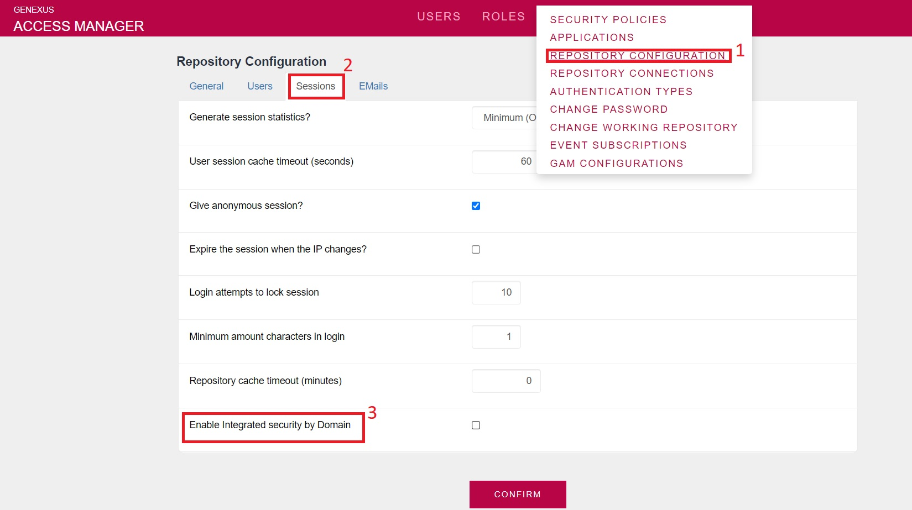
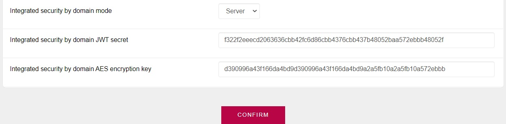

In this article, you will learn how to configure the Integrated Security by Domain feature.
Integrated Security by Domain is provided for cases where you have several applications under the same domain and subdomain, and it is essential for them to function.
Its use is recommended when some of the domain applications do not require user authentication and the content of a Panel simply varies when there is an authenticated user. These applications have Panels with the property Integrated Security Level property = None, so they can be accessed by everyone regardless if they are authenticated or not.
Integrated Security by Domain is implemented using a cookie called GAMIntSecByDomain. At login, when this property is enabled and configured in Server Mode, the cookie will be generated at Domain level.
To use this functionality, the following GeneXus Modules must be included in all knowledge bases:
The following configuration is required for each application in which we want to use this functionality (Server and Clients).
To do so, go to the GAM backend > Settings > Repository Configuration > Sessions and select the Enable Integrated Security by Domain property.

Next, the following properties will be displayed:

This functionality must also be activated in the clients, which have a method that validates the cookie and returns True if there is an authenticated user in the domain:
GAMRepository.ValidIntegratedSecurityByDomain(out:&UserGUID, out:&GAMErrorCollection): Boolean
The GUID of the authenticated user in the domain is returned in &UserGUID. With this, for example, the user's data can be obtained:
If not &UserGUID.isEmpty()
&GAMUser.Load(&UserGUID)
&UserEmail = &GAMUSer.Email
Endif
Since GeneXus 17 Upgrade 9.